Timeline · 16 projects
2026 back to 2016
Scroll down to move from recent research to earlier builds. Hover a project to see a clip, or select it to open the page.
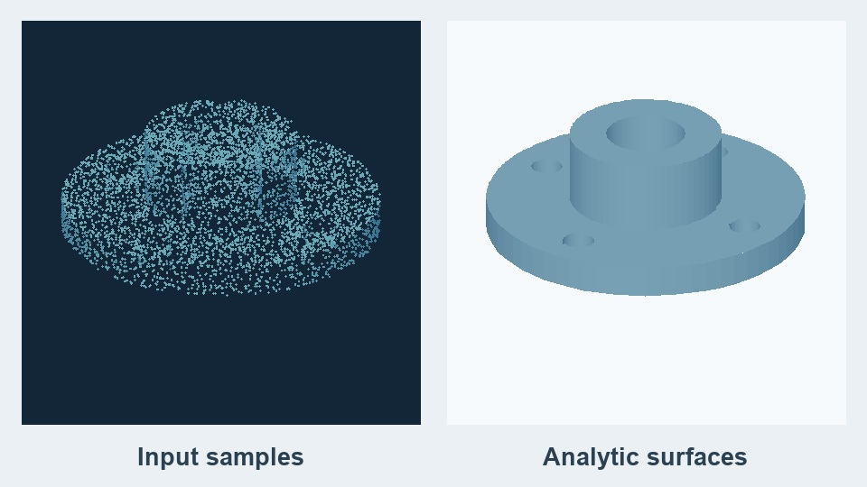
Rebuilding CAD from analytic surfacesAbra-CAD · 2026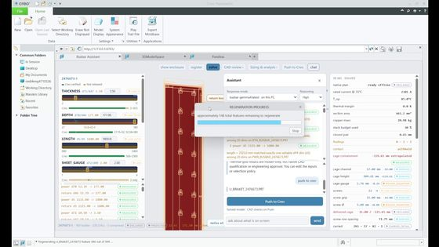
Busbar CAD in minutes, not daysTE busbar design system · 2026Jul 2026Talk at SGP 2026, Bern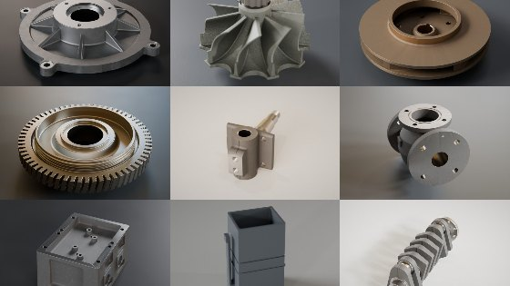
Checking defects against a standardInspection against the standard · 2026–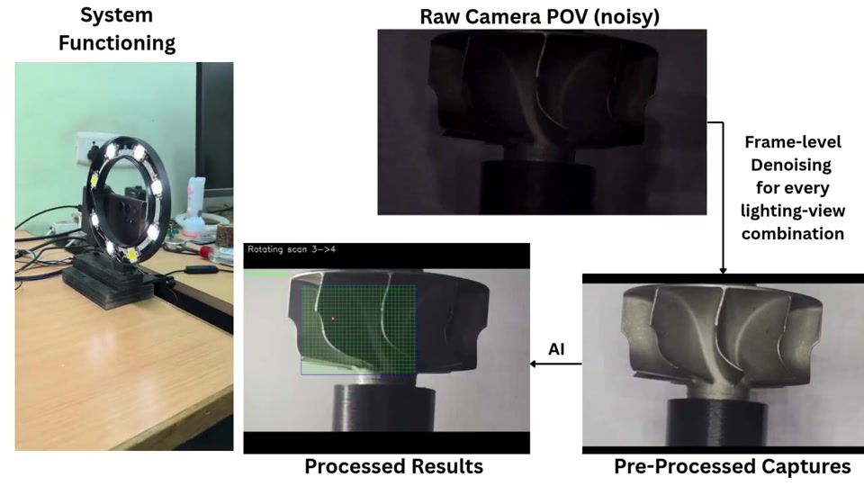
Inspecting cast turbine bladesTurbine wheel inspection · 2025–26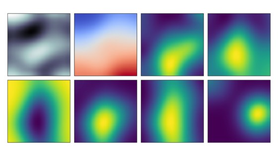
Choosing the next brake testsBrakes India test models · 2025–26Aug 2025Project Associate, ADOPT Lab
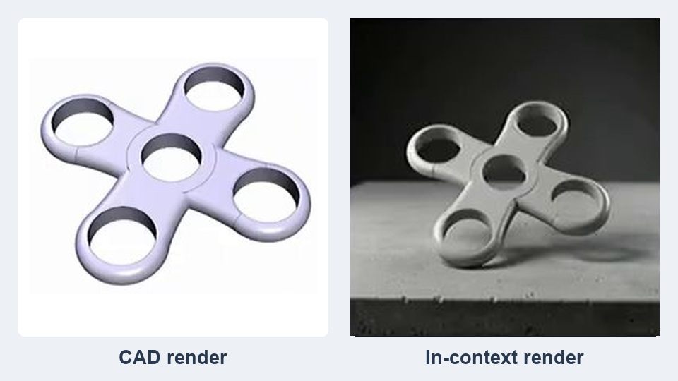
Searching across 226,000 CAD modelsMM-CAD · 2025–262025B.E. Mechanical Engineering
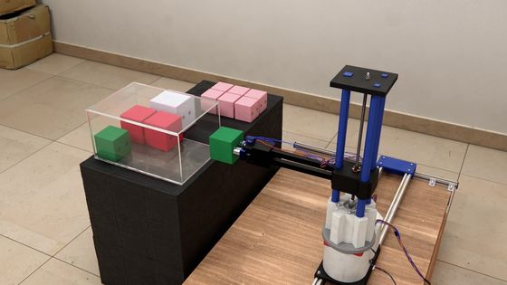
A robot that packs through the doorDeep-Pack · 2025–26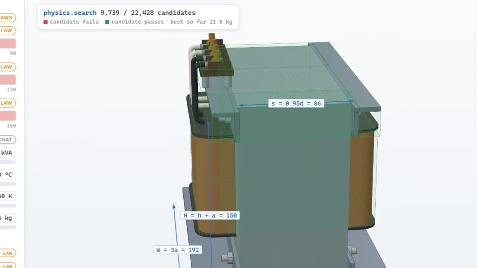
Finding and editing existing partsdesAIgn works · 2024–25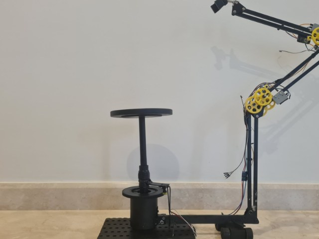
Low-cost 3D captureFast 3D capture rig · 2024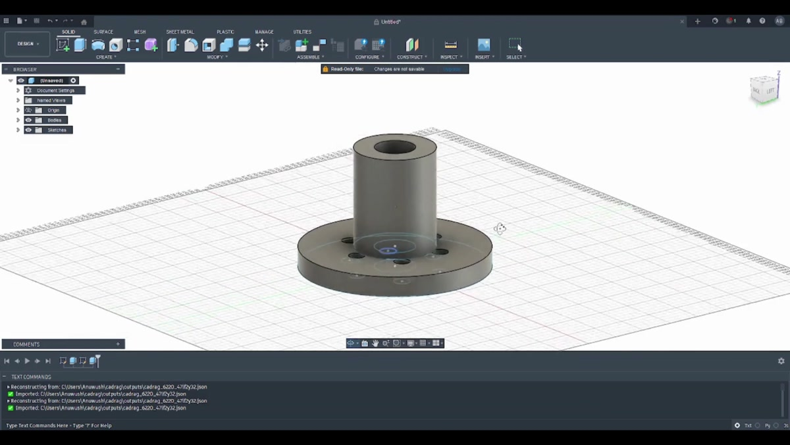
Retrieving and generating editable CADCAD-RAG · 2023–24Apr 2023Joined the AGC Lab
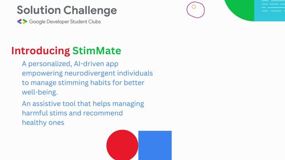
An app for safer stimmingStimMate · 20232023Studying machine learning alongside my degree
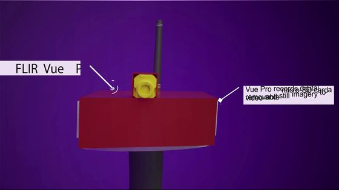
Early crop-disease warningsKishan Know · 2021–22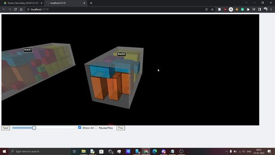
A visual guide to loading a truckPackMax · 2021–22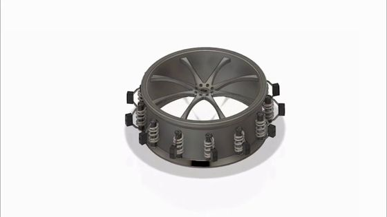
An energy-harvesting tyreE-Metric · 2021–222021Started the B.E.
2016 – 2020School science competitions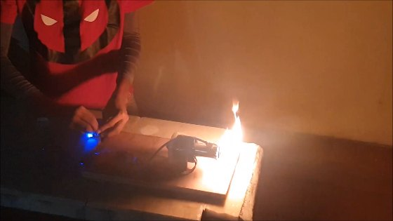
A school-built jet and helmet displayProject Iron Man · School years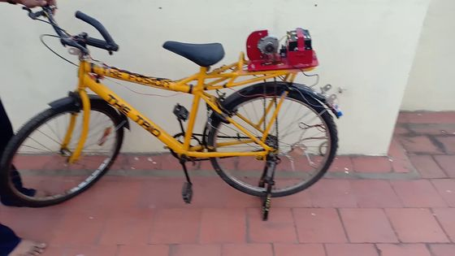
Building an e-bike in schoolE-Bike · 2017–192016Kaizen Robotics Program